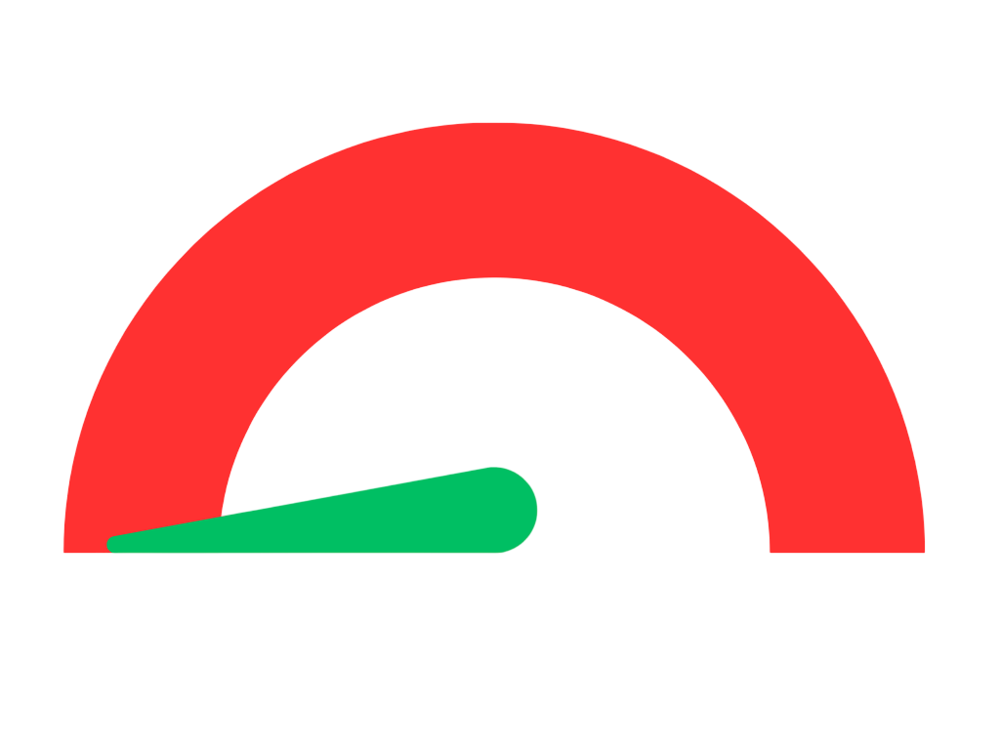

Constituency:North West Delhi Party:BJP Name Enrolled as Voter in:34 Matiala (Delhi) constituency, at Serial no 1118 in Part no 291 Self Profession:Business (Abroad Education Consultant) Assests and Liabilities Assets:Rs 14,74,36,650 ~14 Crore+ Liabilities:RsRs 1,18,57,294 ~1 Crore+ Education Details Category: Post Graduate M.Com From Himachal Pradesh University, Shimla 1995. Campaign Expenditure:Rs 59,83,962 ~59 Lacs Spouse Profession: Consultant-Director-Genius Commercial & Education Institute Pvt. Ltd.
Criminal Cases:0